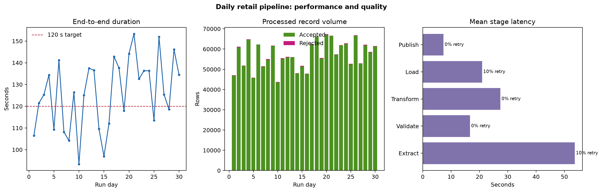

Audience: Data analysts, analytics engineers, and aspiring data engineers
Theme: Designing a reliable, observable, and restartable data pipeline
Learning objectives
By the end of this chapter, you will be able to:
translate a reporting requirement into a layered data-pipeline architecture;
distinguish source, landing, staging, warehouse, and serving responsibilities;
define contracts, quality gates, checkpoints, and operational metadata;
explain why idempotency and incremental processing matter; and
evaluate pipeline performance with latency, throughput, quality, and reliability measures.
Case study: daily retail operations
Imagine a retailer that receives orders from an operational PostgreSQL database, product updates from a supplier CSV file, and store metadata from a small REST API. Managers need a trustworthy daily dashboard showing revenue, order volume, average order value, and fulfilment performance by store and product category.
The first implementation could be one script that queries each source, joins the data, and writes a report. That is useful for proving the logic, but it hides important production questions:
What data was processed, and when?
What happens if the API succeeds but the database extraction fails?
Can a failed run restart without duplicating rows?
How are late-arriving orders handled?
How does the team know that a supplier changed a column name?
Can dashboard users trace a number back to its source?
The case study therefore treats the pipeline as a system, not merely a sequence of SQL statements.
Requirements and service expectations
The business requirement is translated into explicit operating targets.
Requirement
Working target
Design implication
Dashboard freshness
Available by 06:00 daily
Scheduled batch with a completion deadline
Historical correction
Reprocess any date
Partitioned data and parameterized backfills
Duplicate tolerance
Zero duplicated order keys
Idempotent merge on the business key
Data completeness
At least 99.5% of expected orders
Volume and reconciliation checks
Recovery objective
Resume within 30 minutes
Durable checkpoints and bounded retries
Auditability
Every published row traceable
Run IDs, timestamps, source metadata, and logs
Targets make architectural trade-offs testable. A pipeline is not reliable simply because it completed once.
Reference architecture
Code
flowchart TD A["Operational sources"] --> B["Landing zone"] B --> C["Validated staging"] C --> D["Warehouse models"] D --> E["Serving layer"] F["Orchestrator and metadata"] -. controls and observes .-> B F -. controls and observes .-> C F -. controls and observes .-> D F -. controls and observes .-> E
flowchart TD
A["Operational sources"] --> B["Landing zone"]
B --> C["Validated staging"]
C --> D["Warehouse models"]
D --> E["Serving layer"]
F["Orchestrator and metadata"] -. controls and observes .-> B
F -. controls and observes .-> C
F -. controls and observes .-> D
F -. controls and observes .-> E
Each layer has one primary responsibility:
Operational sources own business transactions and reference data. The analytical pipeline should minimize its impact on these systems.
Landing preserves extracted data with minimal transformation. It provides replayability and an evidence trail.
Validated staging standardizes types, names, timestamps, and keys while quarantining invalid records.
Warehouse models express stable business entities and metrics using relational transformations.
Serving publishes tables optimized for dashboards, applications, or downstream analysis.
Orchestration and metadata coordinate dependencies and record run state, quality results, lineage, and timing.
Separating layers prevents source-specific extraction details from leaking into every analytical query.
Data flow and contracts
Source contracts
A source contract records the assumptions the pipeline makes about incoming data. For orders, the contract might require:
Field
Type
Rule
order_id
string
Non-null and unique within the source
store_id
string
Non-null; must resolve to a known store
ordered_at
timestamp
Valid UTC timestamp
quantity
integer
Greater than zero
unit_price
decimal
Greater than or equal to zero
updated_at
timestamp
Used as the incremental cursor
Contracts should be versioned. An added nullable field may be compatible, while renaming order_id is a breaking change that should stop publication.
Incremental extraction
Extracting every historical row each day is simple but becomes expensive. The case study uses a high-water mark based on updated_at:
The upper bound is fixed at the start of the run. This creates a reproducible interval and prevents an extraction from chasing continuously arriving records. A small look-back window can capture delayed commits; the loading step must then deduplicate by order_id and retain the newest updated_at value.
Idempotent loading
An idempotent task produces the same target state when repeated with the same input. The warehouse load uses an upsert rather than an unconditional append:
Transform staging data. Normalize timestamps, currencies, codes, and data types.
Load warehouse tables. Merge dimensions before facts inside controlled transactions.
Build serving models. Aggregate daily store and category measures.
Reconcile and publish. Compare counts and totals, then atomically expose the new partition.
Close the run. Persist status, row counts, quality outcomes, timings, and the new watermark.
Publication occurs only after mandatory checks pass. This prevents a technically successful transformation from exposing incomplete data.
Failure boundaries and recovery
Retries are appropriate for transient failures such as network timeouts, rate limits, and temporary database unavailability. They are inappropriate for deterministic defects such as a missing required column or invalid SQL.
Failure
Classification
Response
API timeout
Transient
Retry with exponential backoff and jitter
Database authentication rejected
Configuration
Stop and alert; do not repeatedly retry
Required column missing
Contract
Quarantine input, stop publication, alert owner
Invalid records below threshold
Data quality
Quarantine rows and continue with recorded warning
Reconciliation mismatch
Correctness
Fail before publication and preserve diagnostics
Dashboard refresh failure
Downstream
Preserve warehouse commit and retry refresh separately
Durable checkpoints allow recovery to begin at the earliest safe stage. A checkpoint is valid only when the output is complete, validated, and addressable by run_id or partition.
Operational metadata
A minimal pipeline_runs table can answer whether a run is active, successful, failed, or superseded.
Task-level metadata should also capture attempt number, duration, input and output locations, query or code version, and quality-check results. Logs explain individual events; metadata explains the run as a whole.
Simulating the architecture
The companion script scripts/python/08-simulate-pipeline-architecture.py models 30 daily runs across five stages. It introduces realistic variation in record volume, processing rates, and transient failures. Failed transient attempts are retried up to two times.
Run it from the repository root:
bash scripts/bash/08-run-pipeline-case-study.sh
The simulation writes:
results/08-pipeline-run-summary.csv, one row per run;
results/08-pipeline-case-study.json, headline indicators; and
results/figures/08-pipeline-architecture-performance.png, the performance plot.

Simulated pipeline latency, quality, and stage performance.
The plot links architecture to observable outcomes. End-to-end duration identifies freshness risk; accepted and rejected volumes expose quality changes; stage latency and retry rate identify the component responsible for instability.
Evaluating the system
The most useful measures answer different questions:
Measure
Question answered
Freshness
How old is the newest published data?
End-to-end duration
Can the pipeline meet its delivery deadline?
Throughput
How many records are processed per unit time?
Acceptance rate
What proportion of records passed validation?
Reconciliation difference
Do source and target totals agree?
Retry rate
Which dependencies are intermittently unstable?
Success rate
How often does the complete pipeline publish valid data?
No single measure proves reliability. For example, a fast run that silently drops 10% of orders is worse than a slower run that fails visibly before publication.
Architecture decisions and trade-offs
Batch versus streaming
The daily dashboard does not require second-level freshness, so batch processing is the simplest design that meets the requirement. Streaming would add state management, event-time semantics, and continuous operations without a corresponding business benefit. If fraud decisions later require events within seconds, that workload should receive a separate streaming path.
Full refresh versus incremental processing
Full refreshes are easier to reason about and remain useful for small dimensions and recovery. Incremental extraction reduces routine cost for the growing orders table. The design deliberately supports both incremental daily runs and partition-based backfills.
Database transformations versus Python
Set-based joins, filters, aggregations, and constraints remain in SQL, close to warehouse data. Python coordinates extraction, API interaction, contract validation, and operational control. The boundary is based on responsibility rather than language preference.
Practical review checklist
Before approving a pipeline design, confirm that:
every source and published dataset has an owner and a contract;
incremental boundaries are explicit and reproducible;
writes are idempotent and protected by database constraints;
raw inputs or equivalent replay points are retained;
mandatory quality and reconciliation checks block publication;
retries are bounded and limited to transient failures;
run and task metadata support diagnosis and audit; and
freshness, volume, quality, duration, and failure alerts have owners.
Key takeaways
A production pipeline is a coordinated data system with contracts, state, recovery, and observability.
Layered storage separates replayable source data from validated, modeled, and published data.
Fixed incremental intervals, durable checkpoints, and idempotent writes make reruns safe.
Data quality gates and reconciliation protect users from plausible but incorrect outputs.
Architecture should be driven by service expectations; daily batch is preferable when it satisfies the actual freshness requirement.
Metrics must cover timeliness, correctness, volume, and component reliability—not only whether a job exited successfully.
What comes next
This chapter established the continuous case study and its reference architecture. The next chapter examines data sources and ingestion in greater depth, including source-system constraints, file and API ingestion, schema evolution, and safe landing patterns.